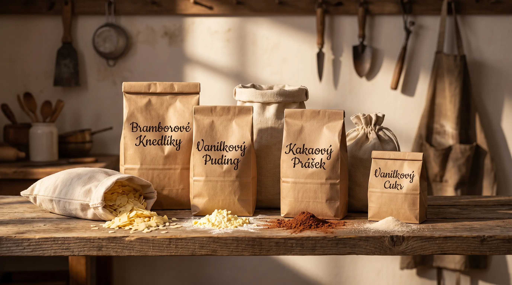

About us
A family workshop in Kochánov in the Czech Highlands. Making food mixes since 2004.

We began producing food mixes in a small workshop in Kochánov in 2004. Over the years we carefully refined our recipes and chose the best ingredient suppliers, until we reached a combination of taste and quality that customers across Bohemia and Moravia now seek out.
Today, trading as "Jůzlová", we supply not only households but also many restaurants, canteens and pastry shops. Our customers value above all the traditional home-made taste — and the speed with which our instant mixes turn into excellent side dishes and desserts.
Potato dough mix — our most sought-after product
We make it with quality wheat flour awarded the Czech KLASA mark, from a nearby mill in Havlíčkův Brod. Dried potato flakes give it its typical taste and characteristic texture. The dough suits classic potato dumplings, dumplings filled with meat or fruit, poppy-seed rolls, croquettes and gnocchi.
Gluten-free puddings
Our instant vanilla and chocolate puddings are ideal for light desserts. The base is quality corn starch, which contains no gluten — so the puddings suit a gluten-free diet too. Into the cocoa pudding we blend high-quality Dutch-process cocoa with 21% fat for a pronounced chocolate taste.
Our goal
To make food mixes of the highest quality at a price below supermarket products of uncertain origin. We use ingredients of the highest grade, because we believe our customers deserve only the best. We insist on direct contact with our customers and always adapt to their needs.
Would you like a taste? Get in touch — we'll gladly offer you a free sample.